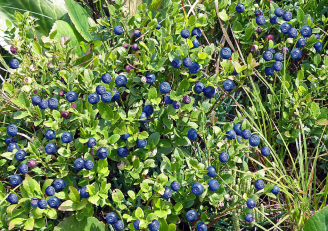
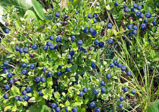

Роза Аваланж
Содержание:

Роза сорта Аваланж отличается средней устойчивостью к грибковым паразитам и различным заболеваниям, при соответствующем уходе растение хорошо растёт, продолжительно цветёт и редко болеет.
Внешний вид и особенности
Сорт розы Аваланж – это чайно-гибридное растение, с характерной для данной разновидности формой. Бутоны элегантные, бокаловидные, аккуратные в не полном роспуске и более пышные, когда раскрываются полностью.
Бутоны окрашены в нежный белый или жемчужно-белый оттенок. Цвет розы глубокий, при внимательно рассмотрении можно заметить вкрапления, словно переливающиеся блёстки. Гладкие, широкие, плотные, бархатистые на ощупь лепестки плотно набиты в бутоне, сердцевина скрыта. Аромат сжатый, едва уловимый.
Кустарник невысокий, не раскидистый. В высоту растение не доходит до одного метра, в ширину не более полуметра. Побеги плотные, жёсткие, прямостоячие, не сгибаются в период обильного цветения. На побегах среднее количество шипов.
 

Выращивание и уход
Аваланж роза достаточно требовательное растение. Её нужно сажать в максимально освещенном месте, потому что сорт является светолюбивым. Посадку лучше проводить весной, чтобы у саженца было время, чтобы прижился и укорениться на новом участке.
К времени посадки почва должна обязательно прогреться. Роза не должна находиться на сквозняке, её стоит спрятать от северных ветров. Кислотность почвы должна находиться в пределах от 5.6 до 7.5 рН.
Рекомендуется выбирать рыхлую, лёгкую почву, застой воды к корнях приведёт к гибели культуры. Глубина лунки не менее 50 см. Перед выкапыванием посадочной ямы нужно смешать грунт с органических и химическими подкормками, тщательно перекопать и сделать углубление.
Особенности размножения
Чернику размножают семенами и вегетативно. При семенном способе размножения собирают самые спелые и здоровые ягоды. Их размягчают и извлекают семена, а затем промывают и сушат. Посадку производят в середине осени. Предварительно семена замачивают в стакане с водой и используют лишь те, которые осели на дно. В неглубокие ёмкости со смесью песка и торфа семена заделывают на глубину 3-5 мм. Их увлажняют и накрывают пленкой. Ежедневно необходимо проветривать и опрыскивать посевы. Всходы появляются спустя несколько недель, после этого укрытие убирают. Зимой сеянцы содержат в хорошо освещенном помещении с температурой +5…+10°C. Весной, когда установится теплая погода, растения в горшочках выносят на свежий воздух и размещают в полутени. Их регулярно поливают и удобряют. Пересадку в открытый грунт можно производить в возрасте 2-3 лет.
img